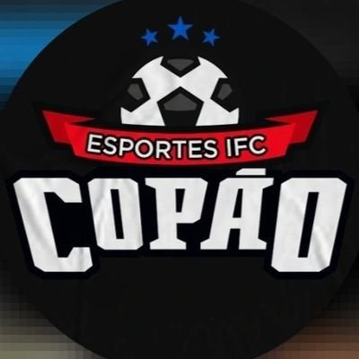
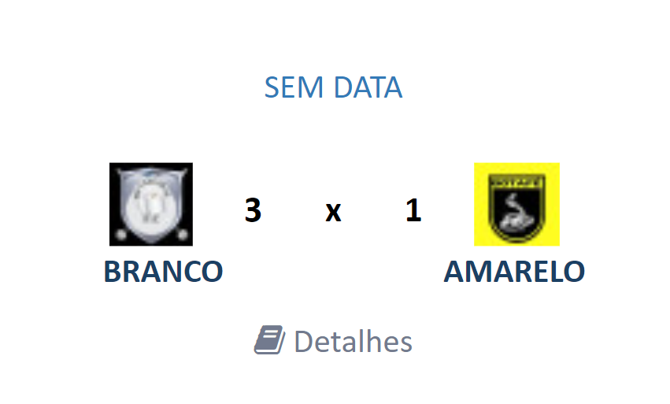
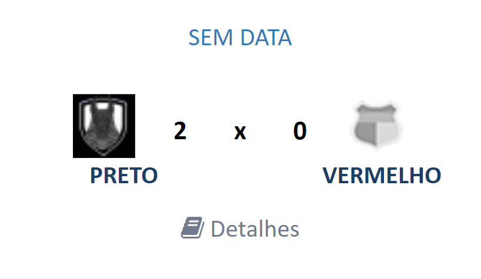

Bem-Vindo ao Copão News!
Aqui você irá ver as principais notícias sobre os jogos do Copão do IFC

Branco 3 x 1 Amarelo
O grande encontro entre Branco e Amarelo finalmente ocorreu novamente, e dessa vez, o resultado foi outro. A partida começou feia, os dois goleiros apenas lançando a bola pra frente para que alcontecesse algum milagre, mas, depois de 5 minutos, Henrique Volgs abre o placar num belo chute cruzado depois do guilherme cobra o escanteio. O time Amarelo se abalou com o gol, e com isso, viram o branco amplia com um chute no ângulo de Gbi com uma bonita jogada de Rick Little. O Branco ia tomando cada vez mais controle da partida, passando bem a bola, fazendo com que Rick Little ficasse cara a cara com o goleiro, abrindo o 3x0. Tudo isso no primeiro tempo ainda. O Amarelo chega a descontar no final com uma falta na entrada da área, mas o time Branco consegue segurar o segundo tempo inteiro e vence sua segunda partida na temporada.

Vermelho 0 x 2 Preto
Uma partida eletrizante onde os rivais mais odiados do copão se enfrentaram mais uma vez. Os times começam o jogo de uma forma muito equilibrada mas após uma falha do goleiro, Black abre o placar e as coisas ficam tensas, após uma jogada bonita com uma bela bola enfiada, murilo invade a area do preto e o goleiro faz o penalti mas João Muller desperdiça a chance. No segundo tempo o preto amplia o placar novamente com Black onde mais uma vez o goleiro Zenere falha miseravelmente. Apesar da diferença de 2 gols o jogo foi muito equilibrado mas as chances claras desperdiçadas pelo time vermelho resultou em uma derrota cruel.
